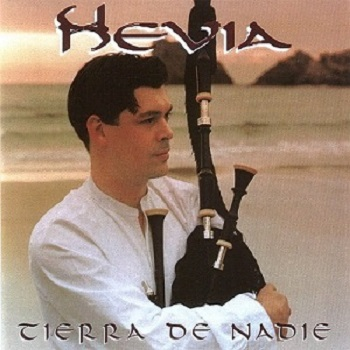
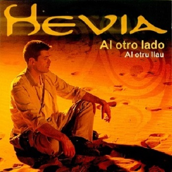
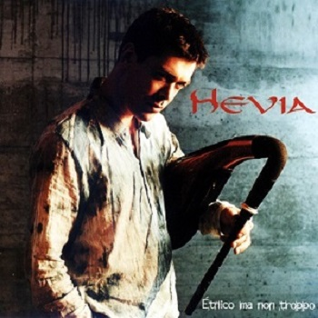
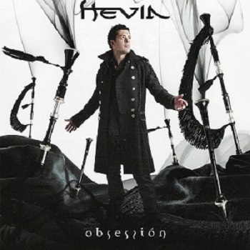
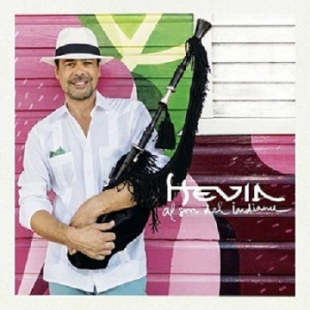

DISCOGRAFÍA
Tierra de Nadie
Lanzado en 1998, obtuvo 6x Platinos en España y se vendieron dos millones de copias.
El tema Busindre Reel, consiguió varias certificaciones de oro y platino en Europa.
- Busindre Reel
- Naves
- Si La Nieve
- Gaviotes
- El Garrotin
- El Ramu
- La Línea
- Llaciana
- Sobrepena
- Barganaz
- Añada

Al Otro Lado
Fue lanzado en el año 2000.Es un disco con medio millón de copias vendidas, y obtuvo además un Platino en España.
- Tanzila
- Fandagu los llobos
- El salton
- Kyrieeleison
- Mermuradora
- Baños de Budapest
- El sitiu
- Rubiercos
- Son del busgosu
- Si quieres que te cortexe
- Marcha del Dos de Mayo

Étnico Ma Non Troppo
Fue lanzado en el año 2003 y también obtuvó medio millón de ventas. Contiene grandes clásicos como: Taramundi, Carretera d'Avilés y Étnico ma non troppo.
- Taramundi
- Carretera d´Avilés
- La carriola
- Pericote
- Tirador
- El torques
- San Xuan
- Pasu pasucais
- Étnico ma non troppo
- Entremediu

Obsession
Fue lanzado en el año 2007. Es una producción musical con una tendencia más chill-out que los anteriores, pero sin perder las raíces celtas.
- Albo
- Albandi
- Obsessión
- Los mártires de Rales
- Vueltes
- Carrandi
- Soy pastor
- Keltronic
- Morning star
- Keltic brass
- Taranus
- Lluz de domingu

Al Son del Indianu
Es el último disco de Hevia, lanzado en el 2018. Trata de una aventura musical con 11 temas sobre un pueblo que habita las dos orillas de un océano.
- Danzonete
- Al son del indianu
- Bachata para un intermedio
- Asturias chachachá
- El día que me quieras en la Habana - con Juan Muro
- El son de la capitana - con Víctor Víctor y Carlos Rubiera
- El berrido
- Rumba de reyes
- Volver al bolero
- Alborada merengada
- Gaita y tambor para Asturias de Albéniz
